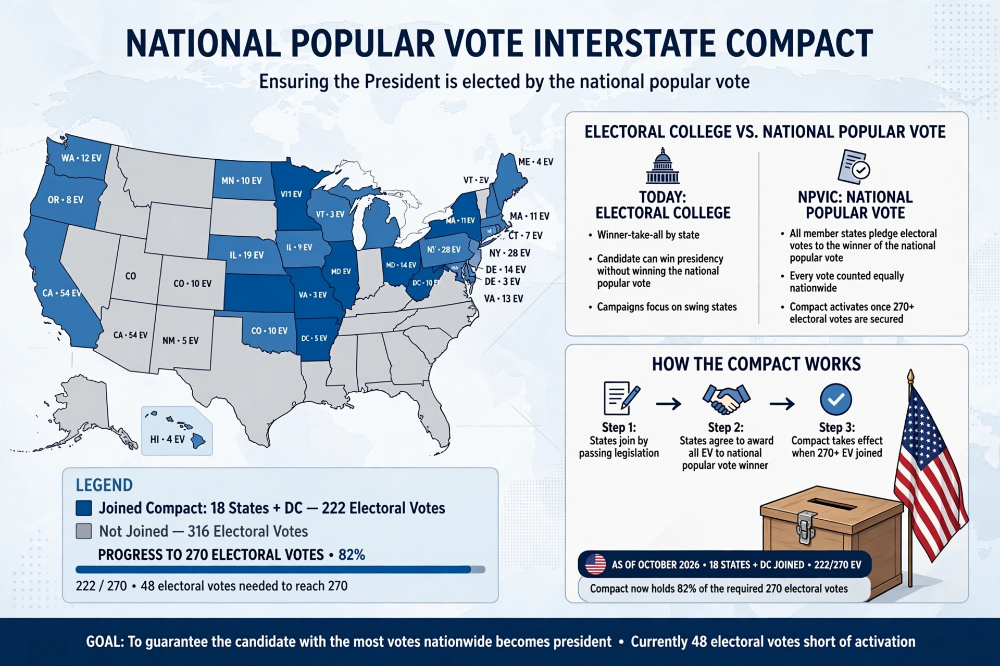

Type: Interstate compact
Proposed: 2006
Threshold: 270 electoral votes to take effect
Purpose: Award member states' electors to the national popular vote winner
The National Popular Vote Interstate Compact (NPVIC) is an agreement among a group of U.S. states and the District of Columbia to award all their electoral votes to the presidential candidate who wins the overall popular vote across all 50 states and D.C. The compact takes effect only when states controlling at least 270 electoral votes — a majority of the Electoral College — have joined.
Member states pledge their electors to the national popular-vote winner rather than their own state's winner. Maryland was the first to join in 2007. By the mid-2020s, more than a dozen mostly Democratic-leaning states had enacted the compact, totaling over 200 electoral votes, short of the 270 threshold.
Supporters argue the compact guarantees that the candidate with the most votes nationwide becomes president without a constitutional amendment. Critics raise questions about constitutionality under the Compact Clause, recount logistics, and effects on campaign strategy.